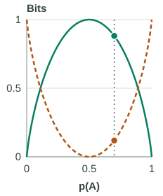

Entropy from KL Divergence
The handwritten derivation compares a node’s class proportions with a uniform reference. Work through its algebra, correct a sign slip in the scan, and check the result on a 70/30 mixture. With a fixed class set, moving away from uniform lowers entropy and raises KL divergence from uniform.
Keep the reference and the class set fixed
Let p be the node’s class distribution. For K possible classes, the uniform reference u assigns 1/K to each. In a binary example, u = (0.5, 0.5), even if the node contains only class A. An absent class has probability zero; it does not change this example’s K from 2 to 1.
Entropy measures uncertainty in the node’s labels. A 50/50 mixture has the largest binary entropy, 1 bit; a pure node has 0 bits. These statements describe the class distribution, not whether a fitted tree will predict new rows accurately.
Expand the logarithm before dropping the constant
KL compares the probabilities assigned to the same classes. The order matters: the expression below averages using p and compares it with u. Use base-2 logarithms throughout, so both entropy and KL are measured in bits.
- Expand the ratio: log₂(pₖ / (1/K)) = log₂ pₖ − log₂(1/K) = log₂ pₖ + log₂ K.
- Add across classes: Σₖ pₖ log₂ pₖ + (log₂ K) Σₖ pₖ. The class probabilities sum to 1, leaving Σₖ pₖ log₂ pₖ + log₂ K.
- Recognize entropy: H(p) = −Σₖ pₖ log₂ pₖ, so the sum of pₖ log₂ pₖ terms is −H(p).
For a fixed K, log₂ K is constant. Minimizing entropy therefore maximizes KL from this uniform reference. This is another interpretation of the same impurity preference, not an additional objective a tree must optimize.

Check a 70/30 mixture by both routes
Choose p = (0.7, 0.3) and u = (0.5, 0.5). These are illustrative probabilities, not estimates transcribed from the scan. First compute entropy, then subtract it from the binary maximum:
Entropy: −0.7 log₂ 0.7 − 0.3 log₂ 0.3 ≈ 0.881291 bits.
KL from uniform: 1 − 0.881291 ≈ 0.118709 bits.
Now use the KL definition directly. The two contributions have opposite signs:
A contribution:
0.7 log₂(0.7/0.5) ≈ +0.339799 bits.
B contribution:
0.3 log₂(0.3/0.5) ≈ −0.221090 bits.
Complete sum:
+0.339799 − 0.221090 ≈ 0.118709 bits.
The B term is negative because p(B) is smaller than u(B). An individual KL term need not be nonnegative; the guarantee applies to the completed sum over all classes. Both calculation routes agree before rounding.
Entropy and KL share one bit between them
Keep u = (0.5, 0.5) fixed while changing p(A). The solid entropy curve and dashed KL curve add to 1 bit at every mixture. The dotted vertical line marks the selected p(A).
Compare the full curves

Selected mixture: 70% A, 30% B
- Label uncertainty
- H(p) = 0.881291 bits
- Difference from uniform
- KL(p ‖ u) = 0.118709 bits
- Sum: entropy + KL
- 0.881291 + 0.118709 = 1.000000 bit
The green part is entropy; the amber part is KL. Their lengths show bits, not class probabilities.
Worked mixture: p = (0.70, 0.30); u = (0.50, 0.50).
A term: 0.70 × log₂(0.70/0.50) = +0.339799 bits.
B term: 0.30 × log₂(0.30/0.50) = −0.221090 bits.
Completed KL = 0.118709 bits. This node is mixed, not pure.
Drawing provenance: these curves are calculated from the binary entropy and KL formulas. The selected mixtures are teaching examples; the figure is not a reconstruction of measured data from the scan. All values use base-2 logarithms.
At p = (0.98, 0.02), entropy is still 0.141441 bits and KL is 0.858559 bits. Only the final p = (1, 0) state is pure A: entropy is exactly 0 and KL is exactly 1 bit. Swapping A and B mirrors the curves around 0.5 and gives the same values.
Reproduce every displayed mixture
| p(A) | Entropy bits | KL bits |
|---|---|---|
| 0.50 | 1.000000 | 0.000000 |
| 0.55 | 0.992774 | 0.007226 |
| 0.62 | 0.958042 | 0.041958 |
| 0.70 | 0.881291 | 0.118709 |
| 0.78 | 0.760168 | 0.239832 |
| 0.85 | 0.609840 | 0.390160 |
| 0.90 | 0.468996 | 0.531004 |
| 0.95 | 0.286397 | 0.713603 |
| 0.98 | 0.141441 | 0.858559 |
| 1.00 | 0.000000 | 1.000000 |
Separate entropy, cross-entropy, and KL
Suppose labels occur with probabilities p, while a prediction assigns probabilities q. Entropy H(p) is the expected −log₂ probability when using p itself. Cross-entropy H(p, q) uses q inside that logarithm but still averages over outcomes drawn from p. Their difference is KL:
For the uniform binary prediction, every outcome receives probability 0.5 and therefore costs 1 bit. Its cross-entropy is always 1 bit, which explains the constant in H(p) + KL(p ‖ u) = 1. A general nonuniform q does not have this constant cross-entropy.
KL is nonnegative and equals zero when p = q. It is not a symmetric distance: for the 70/30 example, KL(p ‖ u) ≈ 0.118709 bits, while KL(u ‖ p) ≈ 0.125769 bits. Reversing the arguments changes both the averaging weights and the ratios.
Why can signed terms still have a nonnegative sum?
For positive z, −ln z ≥ 1 − z. Put z = qₖ/pₖ and multiply by pₖ to obtain pₖ ln(pₖ/qₖ) ≥ pₖ − qₖ. Sum over the classes where pₖ > 0. Their p probabilities sum to 1, while their q probabilities sum to at most 1, so the total is nonnegative. Dividing by the positive number ln 2 converts nats to bits without changing the sign.
A class with pₖ = 0 contributes zero by continuity. If pₖ > 0 but qₖ = 0, KL is infinite. The uniform reference here always assigns positive probability to every class, so our examples stay finite. For p = (1, 0), compute the two terms as 1 × log₂ 2 = 1 and the zero-probability contribution 0.
The KL divergence foundations expand the nonnegativity proof and explain why individual terms can be negative.
Keep parent entropy separate from remaining uncertainty
The scan’s “left fraction × left entropy + right fraction × right entropy” is the average impurity after a split. It need not equal the parent’s entropy before splitting. Their difference is information gain.
In the preceding eight-row example, the parent entropy is 0.954434 bits. Splitting at x < 4.5 leaves 0.405639 bits, gaining 0.548795 bits. Both children use the same two possible classes, even though the right child contains only B. In the uniform-reference interpretation, the children’s size-weighted KL is 1 − 0.405639 = 0.594361 bits, compared with the parent’s 1 − 0.954434 = 0.045566 bits. The increase is the same 0.548795 bits.
This equivalence depends on the fixed class set and the child weights summing to 1. It explains the impurity calculation; validation is still needed to decide how far the tree should grow. The next companion turns to efficient threshold search and pruning.
Sources and next steps
- Cornell’s entropy-from-uniform argument — The lecture interpretation followed by the scan.
- Stanford: Entropy and Relative Entropy — Definitions and the cross-entropy comparison.